<style>
    /* 基础样式：沉浸式阅读体验 */
    body { 
        font-family: -apple-system, BlinkMacSystemFont, "Segoe UI", Roboto, "Helvetica Neue", Arial, sans-serif; 
        line-height: 1.8; 
        color: #333;
        max-width: 800px; 
        margin: 0 auto; 
        padding: 40px 20px; 
        background-color: #fff;
    }

    /* 章节单元 */
    .chapter-unit { margin-bottom: 60px; }

    /* 标题体系 */
    h1 { font-size: 2.5em; color: #c0392b; border-bottom: 3px solid #e74c3c; padding-bottom: 15px; margin-top: 0; margin-bottom: 30px; }
    h2 { font-size: 1.8em; color: #a93226; margin-top: 50px; border-left: 5px solid #e74c3c; padding-left: 15px; }
    h3 { font-size: 1.4em; color: #d35400; margin-top: 35px; font-weight: 600; }
    
    /* 正文 */
    p { margin-bottom: 1.5em; text-align: justify; text-justify: inter-ideograph; }
    strong { color: #c0392b; font-weight: 700; }

    /* 特殊区域 */
    .sidebar { 
        background: #fdf2e9; 
        padding: 25px; 
        border-left: 5px solid #d35400; 
        margin: 30px 0; 
        border-radius: 0 8px 8px 0; 
        box-shadow: 2px 2px 10px rgba(0,0,0,0.05);
    }
    .sidebar-title { font-weight: bold; color: #d35400; font-size: 1.1em; margin-bottom: 10px; display: block; }

    .concept-check {
        background-color: #e8f8f5;
        border: 1px solid #d1f2eb;
        padding: 15px;
        margin: 20px 0;
        border-radius: 8px;
        color: #16a085;
    }
    .concept-check::before { content: "✅ 概念理解检查"; display: block; font-weight: bold; margin-bottom: 5px; }

    .ultimate-question {
        background-color: #2c3e50;
        color: #fff;
        padding: 25px;
        margin: 40px 0;
        border-radius: 8px;
    }
    .ultimate-question h3 { color: #f1c40f; margin-top: 0; border-bottom: 1px solid #5d6d7e; padding-bottom: 10px;}

    /* 习题区域 */
    .exercises { background: #fffcf0; padding: 30px; margin: 50px 0; border: 1px solid #f0e6d2; border-radius: 8px; }
    .question-list { padding-left: 20px; }
    .question-list li { margin-bottom: 15px; }
    
    /* 图片占位符 */
    .image-placeholder { 
        background: #f8f9fa; border: 1px solid #dee2e6; 
        display: flex; flex-direction: column; align-items: center; justify-content: center;
        margin: 30px auto 10px auto; 
        color: #6c757d; font-family: monospace; font-size: 0.8em;
        position: relative;
        overflow: hidden;
    }
    .image-placeholder::before { 
        content: "🖼️ Image Area " attr(data-bbox); 
        margin-bottom: 10px;
    }
    .caption { 
        font-size: 0.9em; 
        color: #555; 
        text-align: center; 
        margin-bottom: 40px; 
        line-height: 1.4;
        padding: 0 10%;
        font-style: italic;
    }
    .caption strong { color: #c0392b; font-style: normal; }

    /* 列表与引用 */
    ul, ol { margin-bottom: 1.5em; }
    li { margin-bottom: 0.5em; }
    sup { font-size: 0.75em; vertical-align: super; }
</style>
<article class="chapter-unit">
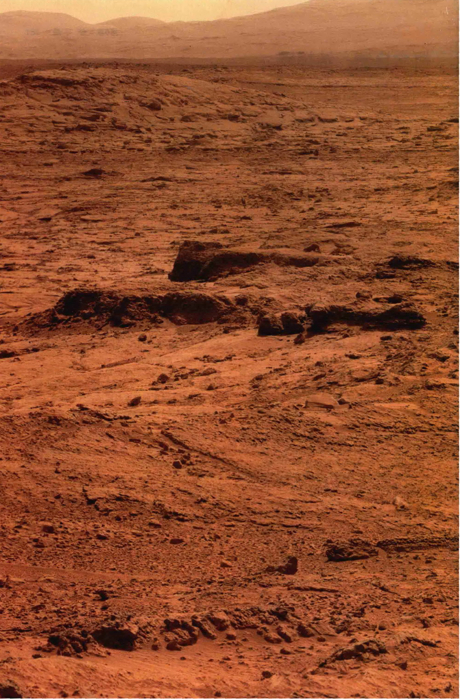
<h1>第10章 火星：险些有生命的行星？</h1>
<aside class="sidebar">
<span class="sidebar-title">学习目标</span>
<p>本章的学习将使你能够：</p>
<ul>
<li>总结火星总体的轨道性质和物理性质。</li>
<li>描述火星上季节变化的观测证据。</li>
<li>将火星的表面特征和地质情况与月球和地球相比较，然后根据火星的历史说明这些特征。</li>
<li>展示火星上曾经有更密集的大气和曾经在其表面有水运行的证据。</li>
<li>解释今天我们也许能在火星上的何处发现古老的水。</li>
<li>将火星的大气与地球和金星比较，并解释为什么这三个行星的演化史差别如此巨大。</li>
<li>讨论已知的火星的内部结构。</li>
<li>描述火星卫星的特点，并说明其可能的来源。</li>
</ul>
</aside>
<p>火星英文名叫Mars，用古罗马神话中血腥的战争之神马尔斯的名字来命名。对许多人来说，火星是最有趣的天体。多年来，它一直激励着人们的思考——也许在那里存在着生命，也许是智慧生命，并且可能是具有敌意的。随着太空时代曙光的到来，这些观念被抛弃了。自动探测器的访问显示，火星上没有任何形式的生命迹象，即使在微生物水平。</p>
<p>尽管如此，这颗行星的性质也足够接近地球，因此火星现在被广泛视为有着太阳系中排名第二的适宜生命出现的环境，仅次于地球本身。大约在同一时间，地球的“孪生”姐妹——金星，正在演变成一个灼热的地狱，而火星很久以前可能拥有奔腾的水流和蓝色的天空。可惜的是，即便生命曾经在那里出现过，现在也必然早已灭绝。今天的火星似乎是干燥而死寂的世界。</p>
<aside class="sidebar">
<span class="sidebar-title">知识全景</span>
<p>天文学家是一个稀有的“物种”，他们在很多公众感兴趣的方面关注着宇宙，他们也确实盯着火星看了很长一段时间。火星可能是除了地球和月球之外，人类侦察得最多的天体。这个陌生的世界激起我们的好奇心，又让我们受挫，也邀请我们去参观。虽然今天的火星似乎与地球上的沙漠一样干燥，但许多科学家认为它在几十亿年前要湿润得多——那时火星的大气更厚，而且气候温暖。看起来似乎很有可能有一天人类将殖民这颗行星，甚至将其“地球化”，这样就为我们的物种造就了第二个“地球”。</p>
</aside>
<h2>10.1 轨道性质</h2>
<p>火星是太阳系的第四颗行星，位于太阳系四颗类地行星的最外面。它位于地球轨道的外侧，如图10.1 (a) 所示——其中显示了按比例绘制的两颗行星的轨道。由于火星在地球轨道外侧，所以其在我们天空中的范围从靠近太阳的位置（<strong>合日</strong>，地球和火星位于图中的A点）到天空中与太阳相反的位置（<strong>冲日</strong>，在B点）。（2.2节）相反，水星和金星的轨道在地球轨道的内侧，因此我们在夜空中看到这些行星从不会离太阳太远。（5.1节、6.1节）从我们的地球上看去，火星会保持在黄道附近，在天空中绕行一大圈，偶尔也会逆行往复。（2.2节）</p>
<p>火星的轨道偏心率是0.093，远大于大多数的其他行星——只有最内侧的水星有更扁长的轨道。因为这比较大的偏心率，火星的近日点距离太阳为1.38 AU（2.07亿千米），远小于其远日点距离1.67 AU（2.49亿千米），导致它在一年的旅程中，接收的日照量变化很大。事实上，火星表面接收的阳光强度，在近日点比在远日点要高近45%。正如我们将要看到的，这对火星气候有重大影响。</p>
<p>火星在夜空中位于冲日的位置时是最大和最亮的，那时地球位于火星和太阳之间，如图10.1 (a) 所示的B位置。如果这种情况发生在火星近日点附近，那么这两颗行星就可以接近到0.37 AU（5600万千米）。这个距离为什么会小于0.38 AU呢？因为地球的轨道稍有偏心，所以当这样的冲日发生时，我们的地球与太阳相距约1.01 AU。（见图10.1，地球在7月上旬到达远日点，而火星的近日点冲日发生在8月下旬。）在这些最有利的情况下，火星的角大小约为25"。此时对火星的地面观测可以区分最小约100km尺度的特征——可以达到人类肉眼观察月球时大约相同的分辨率。请注意，在这个分辨率下，广阔的“运河系统”——一度助推了关于火星上存在生命的猜测——其实无法真的被观测到。它们实际上是由人类的想象力虚构出来的。</p>
<p>图10.1 (b) 显示了1993年1月到2007年12月连续八个火星冲日的日期及其与地球的相对位置。冲日发生的时间间隔大约为780天，因为根据开普勒第二定律，行星的公转速度并不恒定。（2.5节）火星在近日点附近发生冲日比较不频繁，大约每15年发生一次。这样的事件，最近发生在2003年8月28日，是有史以来最接近的，火星距离地球只有0.373 AU，使得业余爱好者和专业人士得到了前所未有的观测条件。平均而言，两颗行星相距0.38 AU的情况，每个世纪只发生三次左右。</p>

<div class="caption">
<strong>图10.1 火星轨道</strong><br/>
        (a) 火星与地球的轨道比较。注意火星的轨道明显偏离中心，这点与地球不同——地球的偏心率在这里几乎难以察觉。当这两颗行星位于太阳的两侧，比如在A点，此时火星的位置叫作合日。当两颗行星离得最近时，地球和火星在太阳的同一侧对齐，比如在B点，此时火星的位置叫作冲日。(b) 一些火星冲日的位置，包括特别有利（极端接近）的位置——如2003年8月，和不太有利的冲日位置——如1995年2月和1997年3月。
    </div>
<p>虽然火星在冲日时很明亮、很容易被看到，但它的亮度与金星相比仍然暗得多。三个因素共同导致了其亮度较低：首先，火星到太阳的距离是金星的两倍以上，所以每平方米火星表面接收的日照量小于金星上的1/4；其次，火星的表面积大约只有金星的30%，所以接受阳光的总面积较少；最后，火星的反照率比金星小得多——只把该行星接收的阳光的15%左右反射回太空，而金星在这种情况下的反照率近70%。不过，在其最亮时，火星的亮度比任何恒星都亮。其显著的红色甚至能用肉眼直接看出来，使得火星在夜空中很容易被识别。</p>
<div class="concept-check">
<strong>概念理解检查</strong><br/>
        为什么火星离地球最接近的情况大约每15年才发生一次？
    </div>
<h2>10.2 物理性质</h2>
<p>与水星和金星的情形一样，我们可以通过简单的几何方法来确定火星的半径。从前面给出的行星的大小和距离的数据，我们得到火星的半径约3400km，更精确的测量给出的结果为3394km，或者说是地球半径的53%。</p>
<p>不像水星和金星，火星有两颗小卫星围绕它旋转，可以通过望远镜从地球看到它们。它们的名字叫福波斯（火卫一）和得莫斯（火卫二），这两位分别对应恐惧和恐慌，是阿瑞斯（罗马神话中的战争之神马尔斯在希腊神话中的名字）和阿芙罗狄忒（爱之女神维纳斯——也就是金星——的希腊名字）的儿子，这些卫星是被行星的引力捕获的稍大的大石块。我们会在本章的结尾讨论它们各自的性质。两个中较大的那个——火卫一的轨道到这颗行星中心的距离仅有9378km，每459min绕火星一周。根据改进后的开普勒第三定律（其中指出，卫星公转周期的平方正比于其轨道半长轴的立方除以它绕转的行星的质量），我们发现，火星的质量为 $6.4 \times 10^{23}$ kg，或者说是地球的11%。（2.8节）当然，通过火卫二的轨道可以得出相同的结果。</p>
<p>根据这颗行星的质量和半径，可以计算出火星的平均密度为 $3900 kg/m^3$，只比月球稍大一些。如果我们假设火星表面的岩石与其他类地行星上的相似，那这个平均密度暗示了在行星内部存在一个坚固的高密度核心。行星科学家认为，此核心由大量的硫化铁（一种化合物，密度是火星表面岩石密度的两倍左右）构成，直径大约2500km。</p>
<p>火星的表面特征很容易被看到，使得天文学家能够追踪该行星的自转。火星绕其自转轴每24.6小时自转一次。因此，一个火星日与一个地球日几乎是同等长度的。这颗行星的赤道平面与其公转轨道平面的夹角为24.0°，也类似于地球的倾角——23.5°。因此，我们会发现，随着火星绕太阳公转，火星上也有昼夜和四季的周期变化，就像在地球上那样。然而，季节变化情况稍有些复杂，因为火星绕太阳公转的轨道是明显的椭圆，导致其接收到的太阳热量本身就会发生变化——火星南半球的夏季出现在其近日点附近，因此明显比其北半球的夏季更温暖。</p>
<h2>10.3 火星的远距离观测</h2>
<p>当火星冲日时，火星离我们最近、最容易观测，我们可以看到它像满月一样圆，太阳光几乎垂直照射其表面。这造成了几个阴影，并阻止我们看到任何地形的细节，如环形山或山脉。即使通过大型望远镜，火星也只呈现为一个红色的圆盘，分布着一些亮的与暗的斑块和突出的极冠。这些表面特征在一个火星年中经历了缓慢的季节变化。我们在第1章看到过，地轴的倾斜如何产生类似的季节性变化。（1.3节）图10.2显示一些从地球上或地球轨道上拍摄的有史以来最好的火星图像，以及一张由美国的海盗号飞船在飞去火星的途中给该行星拍摄的照片。</p>
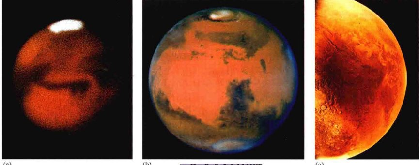
<div class="caption">
<strong>图10.2 火星</strong><br/>
        (a) 深红色 (800nm) 的火星图像，于1991年在图杜迷笛天文台拍摄，这是在法国阿尔卑斯山上的一个视野格外清晰的观测站。在这张地面望远镜拍摄的照片中，这个星球的一个极冠出现在顶部，其他一些表面特征也很明显。(b) 哈勃太空望远镜拍摄的可见光波段的火星图像，于2003年冲日前后拍摄。(c) 这幅火星照片是由海盗号飞船于1976年在飞向火星的路上拍摄的。[法国科学研究中心 (CNRS)、美国国家航空航天局 (NASA)]
    </div>
<p>从地球上看，火星表面最明显的特点是明亮的极冠，如图10.2(a)所示——随着季节变化增大和减小，在火星夏天的时候几乎消失。火星上黑暗的表面特征也随季节的改变而改变，虽然它们的变化可能与极地冰盖融化关系不大。到20世纪初，一些更加充满奇思妙想的观测者认为，这些变化表明了火星上随季节生长的植被。从看到极地冰盖和猜测丰富的植被，到想象那里栖居着也许并不像我们的智慧生命，只是一小步。</p>
<p>但这些猜测和想象没有得到证实。从地球上和地球轨道对火星进行的光谱观测发现，不断变化的极冠大多是冷冻的二氧化碳（即干冰），而不是地球北极和南极那样的水冰。极冠确实含有水，但它仍然是永久冻结的。在图10.2中看到的深色斑纹，曾经被一些人认为是火星人基于灌溉目的而挖掘的一个运河网络的一部分，实际上，它们是非常多坑的和被侵蚀的地区，周围地表经常会尘土飞扬。从远处看，尘土会反复覆盖这些表面特征，然后消散，给人以火星表面不断变化的印象，但其实这只是薄薄的尘土盖的变化。</p>
<p>火星表面粉末状的尘埃承受着强劲的风，经常达到飓风的程度（时速数百千米）。事实上，当美国的水手9号飞船于1971年进入环绕火星的轨道时，一场覆盖整个火星的沙尘暴遮蔽了整个陆地。由于这个探测器执行的是一次飞掠（快速地看一眼）任务，而不是一次环绕运行（可以长时间看）任务，所以这次访问失败了。幸运的是，这场风暴平息了，这个探测器用无线电向家里发回了火星表面的详细信息。</p>
<div class="concept-check">
<strong>科学过程理解检查</strong><br/>
        火星上是否有类似地球上的季节？
    </div>
<h2>10.4 火星表面</h2>
<p>运行在火星轨道的航天器发回的火星表面地图显示了广泛的地质特征。火星有巨大的火山、幽深的峡谷、广袤的沙丘旷野，以及许多其他地质奇观。轨道器对火星表面进行了大规模的调查，着陆器的数据补充了这些全球尺度的研究，提供了6个特定地点（到目前为止）的详细资料。（3.6节）目前，火星探测的焦点——无论是从太空还是从地面上——是不断寻找在其表面或处于其表面之下的水源。（探索3-2）</p>
<h3>大尺度地形</h3>
<p>图10.3显示了一幅行星尺度的拼接图像，这是由海盗号轨道器在20世纪70年代拍摄的上千幅图像拼接而成的。图像以真彩色显示了火星的一些地形特点。最近，火星全球勘探者号以数米精度测绘出了火星表面的地图，使用的仪器被称为激光测高仪——通过分析激光脉冲测量飞船和行星表面之间的距离。图10.4显示了基于这些测量的火星地图，飞船着陆点和一些突出的地表特征被标记了出来。颜色指示了高度：蓝色代表最低的地区，白色的最高。</p>

<div class="caption" style="text-align: right; clear: right;">
<strong>图10.3 火星全球</strong><br/>
        这是一张用环绕火星的海盗号飞船拍摄的大量照片拼接而成的高分辨率图像。火星的塔尔西斯地区的跨度约5000km，从火星赤道区域鼓起，上升到约10km的高度。在左侧的两个巨大的火山标记出了塔尔西斯隆起的近似顶峰。位于这幅图像中心的地貌，是一个被称为“水手谷”的巨大“峡谷”。[美国国家航空航天局 (NASA)]
    </div>
<p>在图10.4中可以很容易看出火星地形的一个显著特征——该行星的北半球和南半球有显著的区别。北半球主要由类似月球上月海的巨大的起伏火山平原构成——确实，这种相似性是识别熔岩流特征的关键。这些广泛的熔岩平原比地球或月球上的类似地貌要大得多，由火山喷发形成，涉及巨量的物质。平原的表面上散布着大量火山岩块，以及因入侵的陨石撞击后而四散炸开的岩石。（火星的大气层太薄，无法对入侵的陨石提供较大的阻力。）南半球由布满了陨石坑的高地组成，高出低洼地区约5km。从地球上可见的大多数暗区是南部的多山区域。图10.5对比了两个半球的典型地貌。</p>
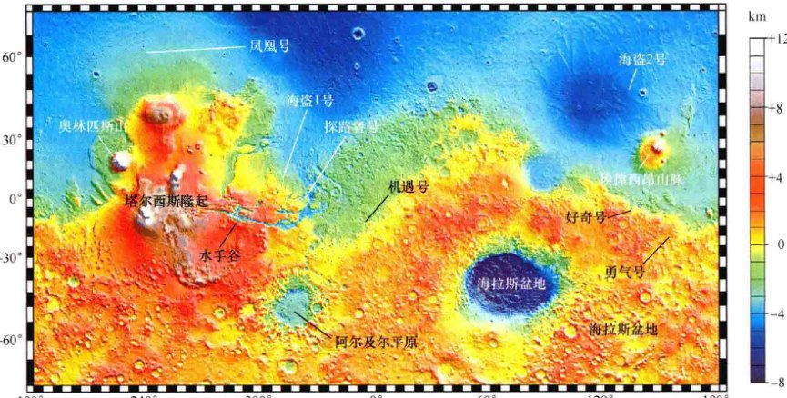
<div class="caption">
<strong>互动图10.4 火星地图</strong><br/>
        火星环球勘探者号的数据显示在了一幅平面地图上。在左侧，可以看到水手谷，如图10.6所示，而在火星上与之相对的地方，是巨大而显眼的海拉斯撞击盆地。注意北半球和南半球之间的巨大海拔差异。一些表面特征被标了出来，包括海盗号、探路者号、勘探漫游者号和凤凰号探测器的着陆点。[美国国家航空航天局 (NASA)]
    </div>
<p>北部平原的环形山比南部高地少得多。基于第5章中提出的论点，这种光滑的表面表明北部表面更年轻。（5.5节）它的年龄可能是30亿岁，而南部有40亿岁。在许多地方，南部高原和北部平原之间的边界相当清晰——表面高度可以在100km的水平距离上下降多达4km。多数科学家假设南部地形是这个星球的原始壳层。而北半球的大部分为何会高度降低，随后又被熔岩充斥，仍然是一个谜。</p>
<p>这个星球上主要的地质特征是塔尔西斯隆起（标在图10.3上）。其大小大致相当于北美洲，位于火星赤道上，比其余的火星表面高出约10km。在它的东部是克利斯平原（“黄金平原”），而它的西边则是一个被称为伊西底斯平原（这个平原是用埃及女神伊希斯的名字命名的）的地区。这些地形是广阔的洼地，尺度约数百千米，最深可达3km。如果我们将“大陆”这一概念从地球和金星延伸到火星上的话，我们可以得出结论，塔尔西斯是火星表面唯一的大陆。然而，如同金星一样，火星上没有板块构造的迹象——地质学家没有找到断层线或其他火星上板块运动的证据，因此，塔尔西斯“大陆”不会像地球上的大陆那样漂移。（4.4节）塔尔西斯看起来甚至比北部平原的环形山更少，使其成为这个星球上最年轻的地区，估计只有20亿~30亿岁。</p>
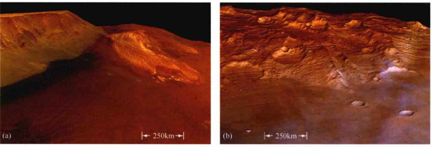
<div class="caption">
<strong>图10.5 近观火星</strong><br/>
        (a) 火星的北半球，像这样的一处位于克利斯平原附近的地貌，由起伏的火山平原组成。(b) 火星南部的高地，像这样的一处位于海拉斯平原附近的地貌，布满了环形山。这些由“火星快车号”拍摄的照片是真彩色的。[欧洲航天局 (ESA)]
    </div>
<p>几乎与塔尔西斯截然相反，在南部高原坐落着海拉斯盆地，矛盾的是，这里包含了火星上的最低点。（在图10.4中，海拉斯清晰可见，并被标出）。该盆地的地面跨越近3000km，低于盆地边缘约9km，低于火星的平均表面超过6km。它的形状和结构确定了海拉斯盆地是一个撞击地貌。海拉斯盆地的形成导致了年轻的火星壳层的大规模重组——根据一些研究人员的观点，可能还能解释周围坚实的高地。该盆地布满的大量环形山表明，撞击发生在火星历史的极早期——约40亿年前，那时是伴随着类地行星形成的密集轰击阶段。（3.6节、5.5节）</p>
<p>巨大的伯勒里斯盆地围绕火星的北极——图10.4中大部分位于顶部的蓝色区域[还可参见图10.11(a)]，该盆地可能是由目前已知的太阳系中规模最大的撞击事件之一所造成的。对碰撞的计算机模拟，结合火星全球勘测者号及火星侦测轨道飞行器获取的详细数据，表明该盆地形成于一个巨大的撞击体——直径大约2000km，是最大的小行星谷神星的两倍大——在太阳系的形成阶段对火星的一次突然的侧向撞击。（3.7节）对这一理论，行星科学家们依然在争论，但其所造成的撞击地貌确实可以与我们所观测到的盆地的大小相媲美，而且这个撞击也能解释为什么火星的北半球会比南半球低这么多，以及差异这么大。</p>
<h3>火星的“大峡谷”</h3>
<p>与塔尔西斯隆起相关的一个特别突出而独特的地貌是一个巨大的“峡谷”，名叫<strong>水手谷</strong>。图10.3显示了它的整体，图10.6显示了它的细节。这个地貌不是地球上的那种峡谷，因为它的形成并没有流动的水参与。行星天文学家推论说，它是由与造成整个塔尔西斯地区向外凸出的相同的火星壳层力量使其表面分裂而形成的。由此产生的裂缝，被称为<strong>构造破裂</strong>，在塔尔西斯隆起的各个地方都有发现。水手谷是其中最大的。对环形山的研究表明，裂缝的年龄至少有20多亿年，对水手谷年龄的估计上限可以到35亿年。（5.5节）源于相同原因的类似（但要小得多）的裂缝，已经在金星的阿佛洛狄忒台地地区被发现了。（6.4节）</p>
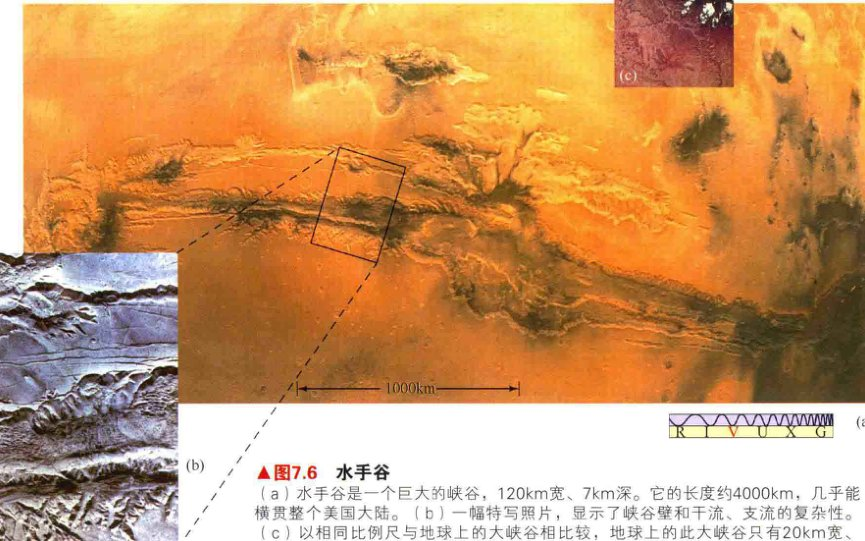
<div class="caption" style="text-align: right; clear: right;">
<strong>图10.6 水手谷</strong><br/>
        (a) 水手谷是一个巨大的峡谷，120km宽、7km深。它的长度约4000km，几乎能横贯整个美国大陆。(b) 一幅特写照片，显示了峡谷壁和干流、支流的复杂性。(c) 以相同比例尺与地球上的大峡谷相比较，地球上的此大峡谷只有20km宽、2km深，这个比较可以体现水手谷是多么巨大。[美国国家航空航天局 (NASA)]
    </div>
<p>水手谷沿火星赤道延伸了近4000km，几乎是行星周长的1/5。在其最宽处，它的宽度大约120km、深为7km。像火星上许多的表面特征一样，它令许多地球上的“竞争者”相形见绌。美国亚利桑那州的大峡谷，可以很容易放进它侧面的一个“附属”裂缝中。水手谷是如此之大，它甚至可以从地球上被看到——事实上，它是19世纪的天文学家观测的众多“运河”中，为数不多的真正的一个行星表面的真实地貌。（它曾经被称为科普雷茨运河）。但是，我们必须再次强调，这个火星地貌不是智慧生物建造的，不是被河流雕刻出来的，也不是火星板块构造的结果。出于某种原因，形成它的火星壳的力量从来没有发展出“羽翼丰满的”类似地球上的板块运动。</p>
<h3>火星上的火山活动</h3>
<p>火星有太阳系已知最大的火山。三个非常大的火山在塔尔西斯隆起上被发现，其中的两个在图10.3的左侧可见。所有火山中最大的是<strong>奥林匹斯山</strong>，位于塔尔西斯的西北（图10.7），刚越过图10.3左侧（西部）的地平线。这座火山的底部直径约700km——仅略小于得克萨斯州——然后上升到相对于周围平原高出25km的高度。这座火山或环形山的火山口，也有80km直径。其他三个大型火山略小一些——“仅仅”18km高——位于隆起的顶部附近。</p>
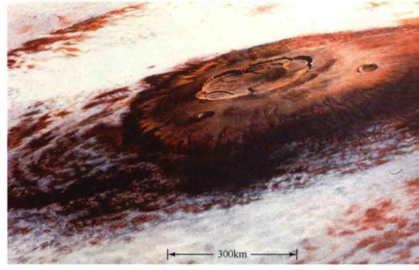
<div class="caption" style="text-align: right; clear: right;">
<strong>图10.7 奥林匹斯山</strong><br/>
        这是火星上以及太阳系所有天体中最大的火山，奥林匹斯山比地球上的珠穆朗玛峰高近3倍。它的山底跨度约700km，峰顶高达25km。这座火星火山目前似乎并不活动，可能已经死寂了至少几亿年。相比之下，夏威夷的莫纳罗亚火山是地球上最大的火山，跨度仅为120km，峰顶到太平洋洋底仅有9km。[美国国家航空航天局 (NASA)]
    </div>
<p>与金星上的麦克斯韦山脉类似，这些火山没有一个与火星的板块活动相关——正如刚刚提到的，火星没有板块活动。相反，它们是盾状火山，坐落在底部火星幔的热点之上。（6.4节）全部四座火山表现了独特的熔岩通道，以及类似地球上的盾状火山中发现的其他流动特征。海盗号和火星全球勘测者号的火星表面图像揭示了数以百计的火山。大多数较大的火山都与塔尔西斯隆起相关，但在北部平原发现了许多较小的火山。</p>
<p>火星火山的高度是该行星表面重力低的直接后果。随着熔岩流出和扩张，形成盾状火山，其最终高度依赖于新的火山支撑自身重量的能力。行星重力越低，山的重量越小，山就会越高。金星上的麦克斯韦山脉和地球上的夏威夷盾状火山升到大致相同的高度——高于各自的基点约10km，这绝不是偶然——地球和金星有类似的表面重力。火星表面重力只有地球的40%，所以其火山上升的高度约是地球的2.5倍。</p>
<p>火星的盾状火山仍然在活动吗？科学家们没有发现近期的或正在进行的喷发的直接证据。然而，如果这些火山随着塔尔西斯隆起而形成，并在1亿年前（这个年龄是根据斜坡上被撞击的程度而估计的）还是活跃的，那么它们中的一些可能仍然至少是在间歇性活动的。不过，两次喷发之间可能要间隔数百万年。</p>
<h3>撞击坑</h3>
<p>水手4号飞船发现，火星表面和它的两个卫星都有来自太空的陨石撞击所形成的撞击坑。火星与金星类似，直径小于大约5km的小撞击坑不多。（6.4节）不过，这一次，对此的解释不是这样的陨石坑没有形成——小陨石在穿透稀薄的火星大气时不会遇到任何麻烦；相反，不管是厚还是薄，大气都是有效的侵蚀剂——将尘土从一个地方运输到另一个地方，这一过程“擦除”了小陨石坑，并且擦除速度比它们的形成速度更快。</p>
<p>总体而言，火星上的侵蚀速度比地球上慢约100倍，但仍远远快于月球或金星。以下例子会便于比较，一个直径为1km的陨石坑也许能在火星上存在1亿年；在地球上，它会在100万年左右消失；但它会在月球上保持上百亿年不变，直到被新的陨石撞击侵蚀掉；在金星上，陨石坑可能会存在到下一次大规模火山活动改变地形时。（6.4节）</p>
<p>正如在月球和金星上，大范围的撞击坑（撞击坑太大而无法被侵蚀所完全抹去）可以作为火星表面的年龄指标。（5.5节）上文所述的年龄——从南部高地的四十亿年到最年轻的火山区域的几亿年，都是以这种方式获得的。</p>
<div class="concept-check">
<strong>科学过程理解检查</strong><br/>
        我们怎么知道火星北部低地比南部高地更年轻？
    </div>
<h2>10.5 火星上的水</h2>
<p>今天火星显然是干燥和荒凉的，但天文学家们有强有力的证据表明，并非一直都是这样的。不像地球到处都有丰富的水，也不像金星（如我们在第6章所看到的）数十亿年来一直没有水，火星提供了耐人寻味的提示，它可能曾经在其表面贮藏着液态水。（6.5节）火星表面侵蚀率相对较低，意味着数十亿年前形成的许多表面特征仍可探测，这为天文学家提供了一个独特的机会——至少在理论上，可以在火星历史的整个跨度探测该行星上的水的存在。</p>
<p>因为水是地球上生命发展（见第13章）的一个重要组成部分，所以它的存在对于火星上可能存在的生命有重要的意义。让我们仔细看看，自从火星形成以来，该行星表面上的环境。</p>
<!-- 探索 10-1 -->
<div class="ultimate-question">
<h3>探索10-1：火星上的生命？</h3>
<p>即使在海盗号探测器于1976到达火星之前，大多数天文学家已经放弃了在火星上发现生命存在的希望。科学家们知道，火星上没有大规模的运河系统，无地表水，它的大气中几乎没有氧气，也没有季节性植被的变化。目前火星上没有液态水，让那里有生命的机会降低进一步。然而，流动的水和（可能的话）过去更密集的大气可能在很久之前为生命的出现创造了适合的条件。（请参见第13章，全面讨论什么是“生命”，科学地介绍并讨论为什么水起着如此重要的作用。）</p>
<p>怀着有某种形式的微生物——也许是细菌或其他微生物——也许存在到今天的希望，海盗号登陆器进行了实验，检测生物活性。这两张随附的照片显示了火星表面在登陆器的机械臂挖了一个浅沟渠获取了土壤样本的之前和之后的火星表面。该臂在第一幅图中是可见的。</p>
<p>海盗号探测器的这三个生物实验假定，假想的火星细菌和地球上发现的细菌之间具有基本的相似性。一个气体交换实验对火星土壤样本中的任何“居民”提供了一个富营养的汤，寻找代谢活动信号的气体。一个标记释放实验将含有放射性碳的化合物和土壤加在一起，然后等待火星生物食用或吸入碳的结果信号。最后，一个热解释放实验将放射性标记的二氧化碳与火星土壤和大气样本加在一起，稍等片刻，然后移除气体，测试土壤（利用加热），寻找是否有任何东西吸收了标签气体的迹象。</p>
<p>最初，所有的三个实验似乎要发出积极的信号了！然而，随后的仔细研究表明，无机（即无生命）的化学反应可以解释所有的结果。因此，在目前，我们没有确切证据表明火星表面有生命，即便微生物。多数科学家认为，海盗号探测器检测到的特殊反应是以某种形式模仿了有机生物体的基本化学反应，但并没有真的发现生命。</p>
<p>对海盗号实验的一个批评是，它们只搜索现在居住的生命。今天，火星似乎被锁定在冰河时代——那种酷寒将令我们所知的生命形式无法生存。然而，如果细菌生命确实在火星早期类似地球的环境中出现，那么我们可能能够找到它们保存在火星表面上或附近的化石。令人惊讶的是，寻找火星上的生命的一个地方竟然是在地球上。科学家认为，在地球表面发现的一些陨石来自月球和火星。这些陨石显然在很久以前以某种形式的撞击从这些天体上被抛进太空，并最终被地球的引力捕获，落到地球上。最令人着迷的岩石毫无疑问是那些从这颗红色星球而来的——其中之一可能含有化石，是过去火星上存在生命的证据！</p>

<div class="caption">
<strong>ALH84001陨石</strong><br/>
            这块陨石被认为在1600万年前从火星上被抛出来。通过显微镜观察这个样本（插图），科学家们可以在岩石闪亮的外壳上的碳酸盐矿物中看到圆形橙褐色的“小球团”。由于碳酸盐只在有水存在时才会形成，所以这些小球的存在表明，二氧化碳气体和液态水在火星历史的一些时期中存在于地面附近的一些层中。[美国国家航空航天局 (NASA)]
        </div>
<p>图显示了ALH84001，一块黑色的陨石，约2kg重、17cm大，于1984年在南极洲被发现。基于对它到达地球之前受到的宇宙线照射情况的估计，岩石被认为是在1600万年前从火星上被抛出来。通过显微镜观察这个样本（插图），科学家们可以在岩石闪亮的外壳上的碳酸盐矿物中看到圆形橙褐色的“小球团”。由于碳酸盐只在有水存在时才会形成，所以这些小球的存在表明，二氧化碳气体和液态水在火星历史的一些时期中存在于地面附近的一些层中。更早的时候，行星科学家已经通过研究海盗号轨道器的照片——关于很明显是在火星气候潮湿和温暖时被水“雕刻”出的山谷的照片——做出了这个结论。</p>
<p>1996年，在美国华盛顿特区，科学家们召开了一个对象广泛的新闻发布会。一个小组认为，基于对ALH84001的研究数据的积累，他们发现了火星上存在生命的化石证据。以下是他们提出的原始火星生命证据的一些关键片段：(1) 地球上的细菌可以产生类似插图所示的球团结构。(2) 该陨石含有多环芳香烃——一类复杂有机分子（通常简称PAHs）的饶舌名字——的线索，它们虽然不直接参与地球上已知的生物循环，但却是植物和其他生物体腐烂过程的产物。(3) 高倍率的电子显微镜显示，ALH84001含有微小的水滴形磁铁矿晶体，含铁硫化物嵌入了碳酸盐溶解的地方。在地球上，细菌可以生产类似的化学结晶。(4) 在非常小的尺度上，拉长的和蛋形的结构在碳酸盐小球团中被发现。研究人员将这些细微结构解释为原始生物化石。</p>
<p>第二幅图中的显微照片显示了第四点，也是最有争议的一个证据——弯曲的棒状结构，类似于地球上的细菌。尺度是至关重要的，但是在这里，结构大约只有0.5 μm尺度，小于在地球上化石中发现的古老细菌细胞的30倍。此外，几个关键的测试尚未完成，如贯穿可疑的化石管，搜索细胞壁、半透膜或任何能储存体液的内部空腔结构的证据。也没人在ALH84001中发现过任何氨基酸，而我们都知道这是构建生命的基本“积木”。</p>
<p>这些结果仍然极具争议性。许多专家不同意在火星上已经找到了生命——甚至是变成了化石的生命。怀疑论者认为，所有的证据都可以是不需要任何种类的生物参加的单纯化学反应的结果。碳酸化合物在化学的各个领域是常见的，多环芳烃被发现在许多没有生命的地方（冰川、小行星带的陨石、星际云，甚至是汽车废气），细菌并不是产生结晶所必需的。目前仍不清楚所示的微小管状结构是否是动物、植物或者仅仅是矿物。此外，还有巨大的地球污染问题，毕竟，在地球上发现的ALH84001，在被“陨石猎人”捡起时，显然已经在南极冰原安坐了13000年之久。</p>
<p>1999年，该团队发布了一个新的分析，关于第二块陨石，名为Nakhla（右下图所示），1911年在撒哈拉沙漠被发现，也被认为来自于火星。同样，科学家报告了微生物生命的证据。这些微生物呈现这样一种形式：成群的微小的球体和椭圆，在由微小的黏土填充的裂纹中被发现，位于陨石的深处，在大小、形状和布局上与地球上已知的细菌有相似之处。由于Nakhla是一块约在13亿年前凝固的火山玄武岩（相比之下，ALH84001为40亿年前），所以新的工作表明，生命可能已经跨越了整个火星历史。如果是这样的话，生命可能到今天仍然存在——但该团队的对手在很大程度上仍然是不服气的。</p>
<p>现在看来，这是一个解释问题——科学前沿问题通常不是我们所希望的那样旗帜鲜明。科学方法需要我们不断检验和再检验相互竞争的理论，尝试确定真相。只有额外的分析和新的数据——也许以直接从火星表面取回到地球的样本的形式——最后告诉我们，原始的火星生命是否在很久以前真的存在，虽然大部分该研究领域的人看上去都得出了这样一个结论，但总体而言，这一结果并不支持火星上存在古老生命这一主张。不过，即使一些怀疑论者也不得不承认，在ALH84001中有差不多20%的有机分子（碳基）可能起源于火星表面——尽管这离有生命存在的证据相去甚远。</p>
<p>火星上存在生命的观点和越来越多的科学界谨慎的怀疑论者的争论还在继续，这些发现可能会在科学史上占有一席之地，并作为有史以来最伟大的科学发现的一部分。也许，我们在宇宙中并不孤独——至少曾经不孤独！</p>
</div>
<h3>过去有流动水的证据</h3>
<p>虽然塔尔西斯地区的巨大表面裂纹并非真正的峡谷，不是由流动的水形成的，但照相证据表明，液态水曾经在火星表面上大量存在。天文学家可以看到水流的两种特征：<strong>径流通道</strong>和<strong>流出通道</strong>。</p>
<p>径流通道，其中之一被显示在了图10.8 (a) 中，在南部高地被发现。它们很广阔——有时总长度达几百千米，互相扭结，并合并成似乎更大、更宽的通道。它们与地球上的河流系统非常相似，地质学家认为这正是它们看上去应该是的东西——干涸的河床！河流在很早之前就已消失了，而这些河流曾经将降雨从火星的山地运输到山谷中。径流通道系统通常被称为<strong>山谷网络</strong>。</p>

<div class="caption">
<strong>图10.8 火星通道</strong><br/>
        (a) 这条火星的径流通道大约400km长，最宽处可达5km。(b) 红河，从路易斯安那州什里夫波特，流淌到密西西比河。两者的主要区别在于，目前还没有液态水在这条通道里或在火星上的其他峡谷里。但径流通道网络的存在强烈暗示，在遥远的过去，火星上存在流动的水。[欧洲航天局 (ESA)、美国国家航空航天局 (NASA)]
    </div>
<p>这些河流的径流通道系统和地球相似吗？它们也是火星全星球范围的水循环——下雨，形成河流，汇聚到湖中和海洋里，再蒸发到空中形成云和雨——的一部分吗？或者它们形成于某种更温和的东西，如定期融化的地下冰，因此没有相关的湖泊或其他延伸水体？多年来，天文学家一直在争论这个问题，但是，根据积累的从最新的火星探测器获取的数据，现在的证据似乎是赞成前一种观点。</p>
<p>许多行星科学家认为，火星可能有这样一个悠长的早期阶段：河流、湖泊，甚至海洋点缀其表面。峡谷网络显示出的时间为40亿年前（火星高地的年龄），那时大气更浓密，表面更温暖，液态水很普遍。图10.9是火星全球勘测者号拍摄的一幅图像，显示了一个任务专家认为可能是三角洲的地方——这里有扇形的通道网络和堆积的沉积物，河流曾经在这里流入较大的水体。在这个例子中，一个湖泊填满了南部高地的一个环形山。</p>

<div class="caption" style="text-align: left; clear: left;">
<strong>图10.9 火星河流三角洲</strong><br/>
        这个缠绕的溪流形成的扇形区域是一条河流流入较大的海而形成的吗？如果是这样，这幅火星全球勘测者号的图像就支持了这一想法——火星上曾经存在着巨大的液态水体。但是，并不是所有的科学家都同意这种解释。[美国国家航空航天局 (NASA)]
    </div>
<p>早期温暖时期的进一步证据有许多来源。类似探索11-1讨论的最近对火星陨石的化学研究强烈暗示有温暖（零度以上）的温度。2010年，环火星巡逻者号和火星快车号的传感器探测到在整个南部高地上有黏土矿床。许多研究者认为，黏土可以作为在表面上有液态水的强有力的证据，当然，也有一些专家不同意，认为黏土可以通过其他手段来产生，它的形成并不一定意味着水的存在。最后，在2009年由勇气号火星车（见下文）进行的对火山岩石的分析认为，当火星大气在35亿年前被抛到太空时，其密度高达现在的20倍。</p>
<p>流出通道[见图10.10 (a)] 可能是火星上较近期的灾难性洪水的遗物。它们只出现在赤道地区，一般不会形成广泛的互联网络——互联网络是径流通道的特点。相反，它们可能是将巨大体积的水从南部高地运输到北部平原的路径。产生这些山洪的汹涌的水，可能也形成了奇怪的泪滴形“岛屿”（退潮时，我们能在海滩的湿砂上看到这种现象的微型版本），这些岛屿在平原上靠近流出通道的端点处会被发现[如图10.10 (b) 所示]。</p>
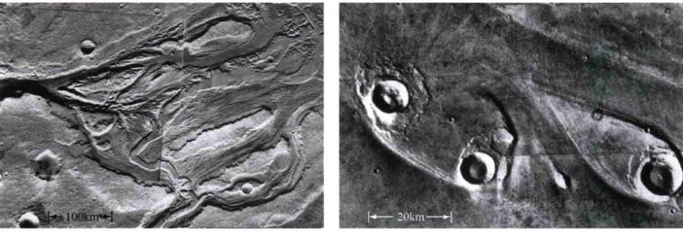
<div class="caption">
<strong>图10.10 火星的外流</strong><br/>
        (a) 火星赤道附近的流出通道，见证了约30亿年前发生的灾难性的洪水。(b) 汹涌的水“雕刻”出了这些流出通道，并在水流在通道中遭遇障碍物——撞击坑——时形成了这些形状奇特的“岛屿”。每一个“岛屿”大约40km长。[美国国家航空航天局 (NASA)]
    </div>
<p>从通道的宽度和深度判断，水的流量必然是非常巨大的——可能比地球上最大的河流系统亚马孙河的流速大100倍，而后者的流速是 $10^5 m^3/s$。洪水在大约30亿年前塑造出了流出通道，大约在同一时间，北部的火山平原形成了。</p>
<p>对古代火星存在水的讨论自然地分成两个时期——早期为40亿年前，与刚才讨论的径流通道相关；后期为大约30亿年前，以流出通道为标志。许多研究者认为，数据提供了在这个后来的“潮湿”阶段，在火星表面存在着大型开放式广阔水体的证据。图10.11(a) 是火星北极地区的计算机生成图片——基于火星全球勘测者号拍摄的图像，呈现出可能覆盖了大大部分北部低地的古老海洋的广大地域。海拉斯盆地（图10.4）是古老的火星海洋的另一个可能的候选者。</p>

<div class="caption" style="text-align: right; clear: right;">
<strong>图10.11 古海洋</strong><br/>
        (a) 一个可能的火星古海洋可能一度跨越两极地区。在此计算机生成的地图中，蓝色区域实际上表示了深度低于火星平均半径的地区，因此也是近似的可能的古代海洋的区域。（颜色标高尺度与图10.4几乎相同的）(b) 这张高分辨率的图像显示了约140km直径的霍尔登环形山的地面被积水侵蚀的初步证据。注意在真彩色插入图中的分层结构，暗示着海滩的沙丘。[美国国家航空航天局 (NASA)]
    </div>
<p>这些海洋的存在与寿命仍然是有争议的。支持者指向这样一些地貌，如在图10.11(b)所示的阶梯状的“海滩”，它们可能被令人信服地留下了一个蒸发的湖泊或海洋，以及后退的海岸线。但反对者主张，阶梯状地貌也可以被地质活动所创建——或许涉及构造的力量，该力量将北半球降低到相对南半球很低的程度，在这种情况下，它们与火星上的水毫不相关。此外，火星全球勘测者号在2003年公布的数据，以及此后由火星着陆器所做的化学分析，似乎表明火星表面碳酸盐岩层——应该主要在古海洋中形成的含有碳和氧的化合物——含量太少。它们的缺失反映出了这样一幅图景：火星是寒冷、干燥的，从来没有经历过形成湖泊和海洋所需要的较长的湿润时期。</p>
<p>然而，随着更多数据的获得，支持古老的湖泊或海洋的证据正在加强。“火星快车”号轨道器在火星的大片广泛地区的表面岩石中检出了“水合的”化合物，强烈暗示那些地区在很长一段时间内都是湿润的。2012年，任务科学家报告说，雷达的研究表明，沉积物质和冰，位于先前确定为海洋的区域[如图10.11(a) 所示]的最上面100m处。此外，如下文所述，由最近NASA的登陆器进行的直接化学分析表明，其登陆地点在过去也长时间经历了其表面上存在液态水的阶段。</p>
<h3>地下冰</h3>
<p>我们最多能告诉大家的是，今天，火星表面没有液态水。然而，火星撞击坑的详细外观提供了关于该行星地下情况的一个重要片段。许多火星撞击坑周围的喷出物毯与月球上的类似结构完全不同。图10.12比较了月球上的哥白尼撞击坑（相当典型）和火星上的尤蒂撞击坑。月球撞击坑周围的物质是我们能期望的从爆炸喷出的大量灰尘、土壤和石块。然而，火星上的喷出物毯给人们留下了鲜明的印象，好像有液体溅湿了它们或者从其上流过。地质学家认为这些喷出物液态化的陨石坑表明，仅仅在表面以下数米，就是多年冻土层或水冰层。撞击产生的爆炸加热和液化了冰，从而导致了喷出物的流体外观。</p>

<div class="caption">
<strong>图10.12 月球-火星撞击坑比较</strong><br/>
        (a) 这是一个巨大的月面撞击坑，名叫哥白尼，是月球上典型的撞击坑。它的喷出物毯貌似是由干燥、粉末状材料组成的。(b) 火星陨石坑尤蒂的喷发物显然曾经是液态的。这种类型的撞击坑有时也被称为“泼溅”撞击坑，但大部分残留在火星的水可能是以地下冰的形式存在。[美国国家航空航天局 (NASA)]
    </div>
<p>关于地下冰的更多的直接证据在2002年被获得，火星奥德赛号轨道器携带的伽马射线分光计检测到，在高纬度地区（在赤道的北部和南部超过50°），火星的表面层混合着广泛沉积的水冰结晶（实际上是它们包含的氢）。在一些地方，冰的含量高达火星土壤体积的50%。该仪器在设计上类似月球勘探者号所携带的仪器，后者在月球两极附近的风化层发现了冰晶。（5.5节）火星快车号上的雷达已经证实了这些结果，还表明这些冰在许多地方延伸到了表面以下几百米。2010年，环火星巡逻者号报告了似乎还不到几百万年历史的“冰川融化”。为什么冰在距今较近的时期会融化还是未知的。</p>
<h3>火星表面上有“近期”的水</h3>
<p>在2000年火星全球勘测者号到来之前，天文学家们认为，火星表面以下所有的水都是以冰的形式存在的。然而，自那时以来，勘测者号任务的科学家报告，在火星悬崖和陨石坑壁发现的许多小规模的“沟渠”显然被比较近期的流动的水所“雕刻”了。这些特征太小了，因此海盗号的相机无法拍到。比如，在火星南部高地的一个撞击坑的内缘，发现了一个这样的沟壑，如图10.13(a) 所示。它的结构与地球上被山洪“雕刻”出的通道有许多相似之处。</p>

<div class="caption" style="text-align: right; clear: right;">
<strong>图10.13 这是火星上流动的水吗？</strong><br/>
        (a) 这幅由火星环球勘测者号拍摄的水手谷附近的一个陨石坑壁（右）的高分辨率图像（左）显示了这样的证据——在比较近的过去，有流动的水形成“沟渠”。(b) 这是地球上北极德文岛的霍顿冲击坑中的一个类似的沟渠——地下冰的偶尔融化，形成了水流上表面。[美国国家航空航天局 (NASA), 戈登·奥辛斯基(Gordon Osinski)/加拿大航天局(Canada Space Agency)]
    </div>
<p>这些有趣的火星特征的年龄是不确定的，可能在某些情况下有上百万年的年龄。然而，勘测者号团队推测，它们中的一些可能今天还是活跃的，液态水可能存在于火星一些地区，水深小于500m。一些科学家质疑这种解释，认为“雕刻”出这些沟渠的“流体”可能是某些固体（颗粒），甚至是液态的二氧化碳，被来自火星壳的巨大压力所驱动。其他人指出，类似图10.13(b) 所示的一些特征，在地球北极——也许是地球上最接近火星苛刻条件的地点——的一个撞击坑中也被发现了，形成原因是地下冰暴露在阳光下而融化。或许同样的事发生在了火星上，在这种情况下，即使这沟渠被流水所创建，也并不一定意味着地表以下有液态水存在。</p>
<p>勘测者号拍摄的数据加深了火星表面是否曾经有水流动的神秘性。图10.14显示了南部高地一个未命名的撞击坑的两幅图像，拍摄时间相隔6年。第二幅图像中的白色条纹被一些人认为是一个冰冻的泥石流，在那里，液态水短暂地沿环形山壁流下，携带着岩石碎片，然后在寒冷的火星表面被冻住。2011年，环火星巡逻者号观测到数百米长的短暂的“指状”流，这可能被认为含有咸的地下水。这些特征的来源和组成是不确定的，但有一点是明确的：不管它是什么，它都是最近形成的，这表明它们的产生是一个持续的过程。</p>

<div class="caption" style="text-align: left; clear: left;">
<strong>图10.14 最近的火星外流</strong><br/>
        这是一组对比照片，火星环球勘测者相隔6年拍摄的一个火星撞击坑的两张图像。在图上可见，某种东西——白色条纹（右下），可能是水——流过表面。如果真是这样的话，图10.13中负责冲出沟渠的活动不只是发生在过去——这样的活动现在也在进行中！[美国国家航空航天局 (NASA)]
    </div>
<div class="concept-check">
<strong>科学过程理解检查</strong><br/>
        说明自20世纪60年代以来，随着获得越来越多的数据，关于火星上的水的学术争论是如何演变的。
    </div>
<h3>火星极冠</h3>
<p>我们已经注意到，火星极冠主要是由固态二氧化碳——干冰组成，并显示出了季节性变化。其实每个极冠都由两个截然不同的冠组成——<strong>季节性极冠</strong>，每年都增长和收缩；<strong>残留极冠</strong>，保持永久冻结。在南部的隆冬，南部的季节性极冠达到最大尺寸，直径大约4000km。一个火星年的半年后，北部极冠达到最大，直径大约3000km。两个季节性极冠不具有相同的最大直径，因为火星绕太阳轨道的偏心率较大。在南半球的冬天，火星离太阳比半年之后北方的冬天更远。因此，南方的冬季比北方的更长更冷，极冠也相应增大得较明显。</p>
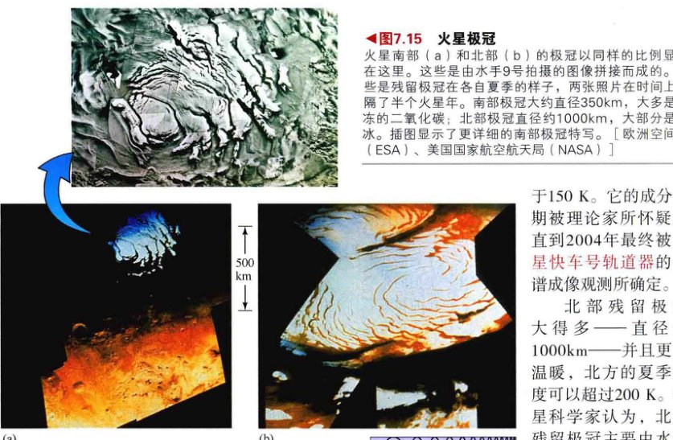
<div class="caption" style="text-align: right; clear: right;">
<strong>图10.15 火星极冠</strong><br/>
        火星南部(a) 和北部(b) 的极冠以同样的比例显示在这里。这些是由水手9号拍摄的图像拼接而成的。这些是残留极冠在各自夏季的样子，两张照片在时间上相隔了半个火星年。南部极冠大约直径350km，大多是冷冻的二氧化碳，北部极冠直径约1000km，大部分是水冰。插图显示了更详细的南部极冠特写。[欧洲空间局 (ESA)、美国国家航空航天局 (NASA)]
    </div>
<p>季节性极冠完全是由二氧化碳组成的。它们的温度从未超过约150 K (-120 °C)——这是干冰可以形成的温度点。在火星的夏天，阳光照射极冠最强时，二氧化碳蒸发到大气中，极冠收缩。在冬季，大气中的二氧化碳再次冻结，极冠再次形成。由于极冠的增长和收缩，造成了火星大气压的实质变化（高达30%）——每年，火星大气的很大一部分冻结了，然后再次蒸发。根据对这些大气波动的研究，科学家可以估算出季节性极冠的二氧化碳总量。季节性极冠的最大厚度被认为大约是1m。</p>
<p>残留极冠（图10.15）比季节性极冠更小、更亮，并展示了一个更加明显的南北不对称性。南部残留极冠直径约350km，成分与季节性极冠很像，可能主要是二氧化碳，虽然它也包含了一些水冰。在所有时候，它的温度都低于150 K。它的成分长期被理论家所怀疑，直到2004年最终被火星快车号轨道器的光谱成像观测所确定。</p>
<p>北部残留极冠大得多——直径约1000km——并且更加温暖，北方的夏季温度可以超过200K。行星科学家认为，北方残留极冠主要由水冰组成，这一观点被光谱观测展示的如下图景所加强：一些水冰的小碎片被太阳的热蒸发，导致了北半球夏季时北极上空水汽浓度的增加。（请注意，在这样的定义中，地球两个极冠都是残留极冠，完全由水冰组成。）火星极冠的厚度是不确定的，但它有可能像在地球上那样，是行星上储藏水的明显仓库。</p>
<p>在两个残留极冠之间为什么会出现这样的温度差（至少50 K）？为什么北部极冠更温暖——因为事实上，火星北半球普遍比南半球更冷（参见10.2节）？原因还没有完全被了解，但它似乎涉及在南方的夏季笼罩着整个星球的巨大沙尘暴。这些风暴会持续1/4个火星年（约6个地球月），还会将灰尘从温暖的南半球吹入寒冷的北半球。北部的冰极冠会变得较脏且反照率较低。其结果是，它会吸收更多的阳光，从而温度会升高。</p>
<h3>火星上的气候变化</h3>
<p>除了前面提到过的沟渠——些沟渠的存在还只是推测，没有做出定论——天文学家们今天尚未在火星表面上的任何地方找到存在液态水的直接证据，并且，火星大气中的水蒸气含量很小。然而，即使撇开未经证实的古海洋的线索，流出通道的广度也显然意味着在遥远的过去，火星上存在着总体积巨大的液态水。所有的这些水都去了哪里？它们可能已经进入了大气层，然后逃逸住了太空，但是，我们能够期待的最好情况是，其中大部分被冻结在今天的火星表面下的多年冻土层中，多出来的一点包含在极冠中。</p>
<p>行星科学家沿着以下宽广的路线追溯火星上水的历史。在早期，这个行星上的环境是温暖甚至类似地球，液态水广泛分布，雨水排入河谷形成径流通道。约40亿年前，由于下文要讨论的那些原因，气候条件发生变化，水开始结冰，形成多年冻土和干燥的河床。火星保持冻结约10亿年，直到火山活动加热广阔的表面区域，地下冰融化，造成山洪暴发，又创建了流出通道。</p>
<p>随后，活动消退，水再次结冰，火星再次成为干燥的世界。海洋的生命时代，如果存在的话，可能是很短的——根据一些估计，可能只有几百万年。火星大气中目前的水蒸气含量是当前火星大气密度和温度条件下最可能的含量。对极冠冻土中存储的总水量的估计是不确定的，有人认为，如果火星上所有的水全部变成液体的话，那么它会覆盖整个火星表面约10m的深度。</p>
<h3>火星登陆器的探索</h3>
<p>就我们对火星的认识而言，遥感测量——在轨道上拍摄照片和进行其他测量——一直是非常重要的，但在某些情况下，近距离观测是无可替代的。到目前为止，美国有7艘飞船成功降落过火星表面。（探索3-2）它们的着陆点标在图10.4中，涵盖了各种火星地形。它们的目标包括对火星表面的岩石进行详细的地质和化学分析，搜索生命和水等。</p>
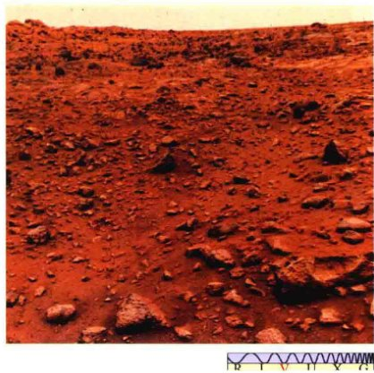
<div class="caption" style="text-align: right; clear: right;">
<strong>图10.16 海盗1号</strong><br/>
        这是一幅海盗1号飞船停在火星表面上拍摄的照片。有细密纹理的土壤和微红的布满岩石的地形伸向地平线，这里含有大量的铁矿石，火星的表面看起来确实是生锈了。天空的颜色苍白偏粉红色，是由空气中的灰尘造成的。[美国国家航空航天局 (NASA)]
    </div>
<p>海盗1号降落在克利斯平原，这是塔尔西斯东部的一片广阔的凹地。迎接探测器照相机（图10.16）的是一个微风吹拂、轻微起伏、相当荒凉的平原，散落着各种尺寸的岩石，与地球上的沙漠没什么不同。图10.16中可见的地表具有了展现其特征的颜色——红色。虽然火星表面相对地球表面含有更为丰富的铁，但其铁的整体丰度类似于地球的铁的平均含量。在地球上，大部分的铁已分化到了地心；但在火星上，化学分化还没有那么完善。</p>
<p>下一个在火星表面成功着陆的探测器是火星探路者号。1997年，在它出乎意料的超长任务寿命期间（任务持续了近3个月，而不是预期的1个月），着陆器对火星大气与大气尘埃进行了测量，而其机器人漫游车“旅居者”在离着陆器50m的范围内，对土壤和岩石进行了化学分析。（3.6节）（探索3-2）此外，超过16,000张该区域的照片被发回地球。旅居者着陆器发现，其着陆地点的土壤类似海盗号登陆器所发现的。然而，对附近岩石的分析，揭示了它们与在地球上发现的火星陨石有不同的化学组成（见探索7-1）。</p>
<p>探路者号的登陆地点经过精心选择，位于一个流出通道口附近，登陆器周围的许多岩石和石块的大小、分布和组成，与它们被洪水沉积到那里的情况是一致的。此外，那里的许多圆润的鹅卵石强烈暗示了在过去的一段时间里有流水的侵蚀。</p>
<p>双子登陆器——勇气号和机遇号火星探索漫游车在其登陆点附近几千米的范围内，进行了广泛的化学和地质研究。这两个探测器位于火星上相对的两侧，研究的主要目的是在火星表面发现在过去一段时间存在液态水的证据。（3.6节）（探索3-2），它们的发现提供了最好的证据——古老火星的表面有常备的水，这改变了许多心中持怀疑态度的科学家对火星上水的认识。</p>
<p>勇气号的降落地点多岩石，和早期登陆器所遇到的地形在许多方面是相似的，但科学小组仔细研究发现，登陆器附近的大部分岩石似乎已在很久之前被水广泛地改变了。然而，在相距半个行星的另一边，机遇号似乎已经在它的追寻中撞了大运，它发现包围着它的岩石显示出来的每一条化学和地质的线索，都表明它们在过去曾经非常潮湿——可能被浸泡在盐水中（图10.18）。</p>
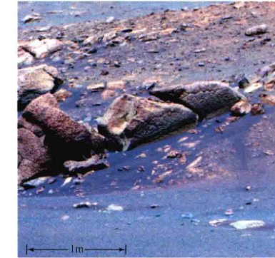
<div class="caption">
<strong>图10.18 火星全景图</strong><br/>
        (a) 2004年机遇号漫游车在火星上的登陆点附近拍摄的一张全景地形照片。这是耐力陨石坑，直径大约有130m。(b) 耐力陨石坑底部一丛岩石的一幅特写照片，机遇号在那里发现了在火星的过去存在丰富液态水的证据。蓝色是假的，并不代表目前表面上的水。[美国国家航空航天局 (NASA)]
    </div>
<p>机遇号的登陆地点之所以选择那里，一部分是因为火星奥德赛号轨道器已经在那里的表面岩石中检测到了一种被称为赤铁矿的化合物，这也是过去存在水的可能线索。然后，由机遇号火星车所做的测量也确实表明，着陆点附近的岩石一直长时间的交替处于浸泡在水里和变干的状态中，这可能是因为在火星的历史进程中，一个浅水湖泊反复地充满水再干涸。如果生命确实曾经在这里存在过，那么在这里找到的各种岩石中可能会发现保留得非常好的化石记录，但机遇号没有搭载开展此类研究的设备。</p>
<p>勇气号在2010年停止了与地球的通信，它与地球的通信超过了6年，而原本预计只持续3~6个月。截至2013年，机遇号还在运作并仍与地球通信。任务控制者很高兴这两个火星车对行星科学做出了许多重要贡献。</p>
<p>美国宇航局的凤凰号探测器于2008年5月降落在火星的北极地区，如图10.4所示。其目标包括：确定火星北极是否能够或者曾经能够维持生命，寻找水冰或水的其他证据，并探索火星的极地气候。这个航天器不是漫游车，而是包含了一个复杂阵列的设备，以监测天气状况，并收集和分析周围的土壤。</p>
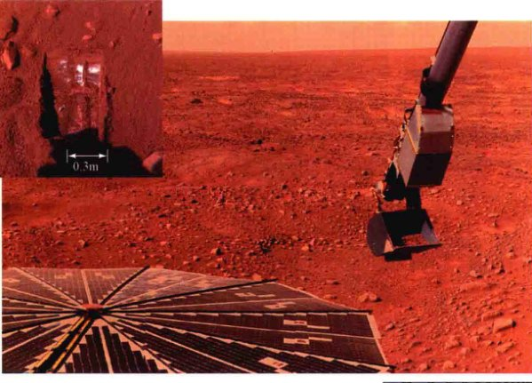
<div class="caption" style="text-align: right; clear: right;">
<strong>图10.19 火星探索</strong><br/>
        凤凰号登陆器的机械臂在这里被展现出来，铲子里有一些表面样本，然后再将其传送到登陆器上的一个微型化学实验室中。在底部的圆形硬件是其太阳能电池板之一。插图显示了第一批沟槽（大约为这本书的大小）中的一个，它们是被凤凰号挖出来的，深约8cm。顶部附近的白色物质几乎可以肯定是冰，在挖掘后很快就融化了。[美国国家航空航天局 (NASA)]
    </div>
<p>凤凰号确认了着陆点处有地下冰的存在（图10.19），在土壤中发现了黏土和碳酸盐，都暗示着在过去的一段时间，这里有着潮湿的环境，虽然科学家们不知道，这些水到底是季节性融化的冰造成的，还是更遥远的过去的遗留物。对土壤的化学分析表明，液态或接近液态的水在最近的100万~200万年前存在于或接近火星表面。最初，土壤的整体成分似乎类似地球，但后续的分析暗示了一些化学上的不同，这些不同可能对生命不太友好——至少对我们所知道的生命形式而言。这个任务留下了悬而未决的问题——由凤凰号挖出的土壤样品是否包含碳基有机化合物。</p>
<p>凤凰号降落在火星北半球的深秋，在最后几周，随着冬天的逼近，它的传感器报告了第一场雪。阳光逐渐减弱，极端低温切断了登陆器的能源供应，于是任务结束。</p>
<p>最新到达火星的是美国宇航局的好奇号火星车，它在2012年8月软着陆到这颗行星上。这个小汽车大小的探测器是迄今为止美国宇航局放在火星表面的最复杂的着陆器。它的任务包括研究火星的气候和地质，探测过去和现在水的作用，确定着陆点（在盖尔陨石坑内）是否曾经有利于微生物存活，并评估这个星球是否适合未来可能的载人探索。</p>
<p>如图10.20所示，好奇号降落在一个被认为是古老河床的区域，在遥远的过去，这里可能保持有深达数米的流水。寻找碳酸盐岩石——将有力地支持火星上有古代河流和海洋的想法（10.5节）——是该任务的关键。第一批详细的科学数据于2012年12月被发回，但是，除了一些早期的线索和许多媒体的猜测外，并没有明确地检测到碳酸盐或有机物。不过，它的分析却揭示了火星土壤中复杂的化学成分，包括水、硫和含氯矿物，并清楚地表明了这个探测器所搭载的科学实验室的能力。图10.20的插入图显示了通过搭载的钻头钻入表面岩石的洞，使得火星地下尘埃的第一个样本被带到船上进行分析，这些地下尘埃被认为不会被可能改变了岩石外层化学成分的天气过程所影响。</p>
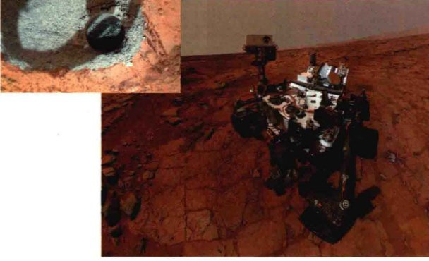
<div class="caption">
<strong>图10.20 好奇号在火星上</strong><br/>
        这是好奇号在盖尔陨石坑底部的一幅“自画像”。它的采样臂包含相机——已经从照片中删除了。插入图显示了好奇号的迷你钻头在火星基岩中挖出的第一批洞中的一个。洞的直径为1.6cm，深度为2cm。[美国国家航空航天局 (NASA)/喷气推进实验室(JPL)]
    </div>
<p>尽管希望中的碳酸盐还没有（截至2013年中期）被发现，但任务科学家相信，好奇号在其多年的任务生命中，将会对我们关于这颗红色行星的历史和演化知识做出许多重要贡献。</p>
<div class="concept-check">
<strong>概念理解检查</strong><br/>
        火星上的水都到哪里去了？
    </div>
<h2>10.6 火星大气</h2>
<p>在海盗号和水手号飞船到达火星之前很长时间，天文学家就通过地球上的光谱观测发现，火星大气相当稀薄，主要由二氧化碳组成。1964年，水手4号证实了这些结果，发现火星的大气压只相当于地球海平面大气压的1/150，并且二氧化碳至少占了其总大气组成的95%。随着海盗号的到来，科学家可以做出对火星大气更详细的测量。目前已知火星大气的成分是95.3%的二氧化碳、2.7%的氮气、1.6%的氩气、0.13%的氧气、0.07%的一氧化碳以及大约0.03%的水蒸气（水蒸气的水平是变化的）。火星探路者号所遇到的天气状况和海盗1号所发现的颇为相似。</p>
<h3>大气结构和天气</h3>
<p>随着海盗号着陆器降落到火星表面，它们对不同的高度进行了温度和压力测量。结果表示于图10.21中。火星大气中含有一个对流层（高度最低的大气区，其中有对流天气发生），并随不同地方、不同季节而变化。（4.2节）对流层的变化源于火星表面温度的变化。在夏季的中午，火星的表面温度可能会达到300K，大气对流强烈，对流层顶部可以达到30km的高空。到了晚上，大气层仍然有点热，温度可以下降到差不多100K，于是对流停止，对流层消失。</p>
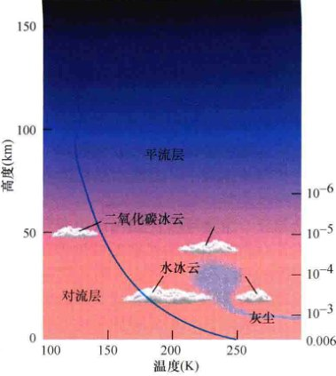
<div class="caption" style="text-align: left; clear: left;">
<strong>图10.21 火星的大气</strong><br/>
        火星大气的结构，由海盗号和火星全球勘测者确定。对流层，在白天它可以达到高度约30km处，有时包含水冰形成的云，或者更频繁的，包含每年都会发生的席卷全球的沙尘暴的灰尘。在对流层上方是平流层。注意在平流层没有更高温度的区域，表示没有臭氧层。
    </div>
<p>平均而言，火星的表面温度比地球约冷50K。清晨的低温往往会在火星峡谷中产生水冰雾（图10.22）。在火星大气的高层——平流层中，温度足够低，二氧化碳固化，导致了一个较高的二氧化碳云霾层。</p>
<p>在一年中的大多数时候，火星的天气每天几乎都是一样的：太阳升起，表面升温，轻风吹拂；直到日落，温度再次下降。只有在南方的夏天时，天气才有常规的每日变化。表面的强风（没有雨或雪）卷走了干燥的尘土，携带它们进入平流层，并最终沉积在这个星球的其他地方。最狂暴的事件，是巨大的火星尘暴，沙尘席卷了整个大气层，其灾难程度令我们能想象的发生在地球撒哈拉大沙漠的最可怕的风暴也显得黯然失色。灰尘可以在一次沙尘暴中在空气中停留几个月。尘暴形成沙丘系统，外观与地球上的类似地貌相似。</p>

<div class="caption">
<strong>图10.22 峡谷的雾</strong><br/>
        (a) 由于太阳光到达并加热了峡谷底部，所以它在火星表面驱动了水蒸气。当这种蒸汽接触到表面之上的冷空气时，再次冷凝，结果造成了短暂的水冰雾，正如在这里——靠近火星的北部极冠处——看到的。(b) 雾也笼罩了200km宽的洛厄尔环形山的底部，这幅图由火星全球勘测者号在2000年秋季拍摄。[美国国家航空航天局 (NASA)]
    </div>
<h3>大气的演化</h3>
<p>虽然火星和金星的大气成分之间有一些表面上的相似，但两颗行星显然有完全不同的大气历史——火星的“空气”比金星的稀薄超过10 000倍。结合我们对其他行星的研究，我们可以发问：为什么火星大气是现在这样的？</p>
<p>据推测，火星在其历史的很早期就从行星内部脱气，就像其他类地行星那样获得了第二大气。（4.2节）约40亿年前，正如火星高原上的径流通道所显示出的，火星也许有一个相当浓密的大气，还有蓝色的天空、海洋和雨水。即使考虑到火星到太阳的较远距离，以及太阳40亿年前的发光量比现在约少30%，行星科学家估计，火星大气的温室效应也比目前地球大气的情况高几倍，还可以保持还算舒适的条件。高于0℃（水的冰点）的表面温度似乎是完全可能的。</p>
<p>在接下来的10亿年的某个时候，火星大气的大部分消失了。其中一部分有可能被太阳系早期火星与大天体的撞击事件所“驱逐”，而更大的部分则可能因为火星的引力较弱而泄露到了太空中。（详细说明5-1）然而，剩余气体的大部分可能变得较不稳定，在一种“反向失控的温室效应”下逐渐丢失——正如我们现在所描述的。图10.23总结了接下来的场景，这一场景被许多行星科学家所接受，虽然不是被所有科学家——那些人本来就不相信火星上曾经有液态水和厚厚的大气，因此他们认为，今天的火星也没有这些东西是理所当然的。</p>

<div class="caption">
<strong>图10.23 大气变化</strong><br/>
        (a) 在地球上，地质和火山活动将二氧化碳返回到大气中，并取得稳定的平衡。其结果是温和的温室效应。(b) 在火星上，火山活动要少得多，返回的二氧化碳不足以补充大气。其结果是，火星大气层变薄、冷却，在短短的几亿年中失去它的大部分二氧化碳。如果生命确实出现在了早期的火星上，它最有可能只有这个相当短暂的时间窗口得以演化。
    </div>
<p>控制一颗类地行星大气层中二氧化碳水平的关键机制是岩石吸收二氧化碳并融入行星的壳层中。液态水的存在大大加快了这个过程——二氧化碳溶解在行星上的河流和湖泊（和海洋，如果有的话）的液态水中，最终与表面物质反应形成碳酸盐岩石。结果——至少在没有任何反作用时——对大气中的二氧化碳是一种持续性消耗。</p>
<p>在金星上，正如我们在第6章中看到的，反作用确实存在，熟悉的温室效应失控了，导致了高温和高压。（6.5节）随着温度的升高，二氧化碳离开金星表面进入大气，从而导致我们现在在那颗行星上发现的极端条件。</p>
<p>在地球上，一个非常不同的过程抵消了将二氧化碳吸收到地表的作用——板块构造不断循环我们这个星球的二氧化碳，并通过火山活动将其返回到大气中。（4.4节）最终，这两个相互竞争的过程达到平衡，大气中二氧化碳的浓度趋于保持大致不变。</p>
<p>然而，这两个对立的过程在火星上都没有出现。这颗行星太冷了，温室气体不会逸出。而且，正如我们已经看到的，火星的内部冷却速度比地球快，这个行星显然从未发展出大规模的板块运动。即使考虑到在本章前面讨论过的大型火山，平均而言，火星的火山活动要远远低于地球，所以消耗二氧化碳的过程比那些补充过程更有效，因此，一条“单向通道”被建立出来，使大气中的二氧化碳水平稳步下降。</p>
<p>由于火星二氧化碳被消耗，其温室效应减弱，行星冷却，使更多的二氧化碳离开大气层。其原因如上所述——在较低温度下，允许更多的二氧化碳被吸附在行星表面，其结果也会造成失控——温度越来越低，大气中的二氧化碳逐渐减少，这与金星上的情况正好相反。计算结果表明，火星大气中二氧化碳的大多数已经被这种方式在一个相对较短的时间内耗尽了，也许只用了几亿年（图10.24），虽然一部分二氧化碳可能通过一些火山活动被补充，对生命而言“可能舒适”的行星环境也最多延长到了5亿年左右。大部分关于火星表面是否存在液态水的辩论主要围绕该行星的表面冻结所花费的时间。</p>
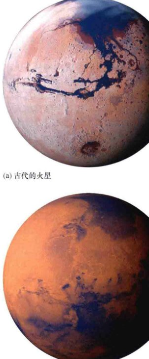
<div class="caption" style="text-align: left; clear: left;">
<strong>图10.24 火星的演化</strong><br/>
        (a) 艺术家构想的40亿年前的火星，有一个逐渐退化的大气层和一些逗留在其表面的水。(b) 今天的火星照片。[基斯·维南博斯(Kees Veenenbos)]
    </div>
<p>随着温度的继续下降，水从大气中冻结出来，进一步降低了大气中温室气体的水平，加速了冷却。（回想第6.5节，水蒸气也有助于温室效应。）最后，甚至二氧化碳都开始冻结了，尤其是在两极，火星逐渐呈现出我们今天所看到的寒冷的状态——一个寒冷、干燥的行星，它的大部分原始大气都位于其贫瘠的表面里或表面下。</p>
<div class="concept-check">
<strong>概念理解检查</strong><br/>
        火星的大气发生了什么事？
    </div>
<h2>10.7 火星的内部结构</h2>
<p>海盗号登陆器携带地震仪探测火星的内部结构。然而，其中一个没有工作，另一个因为火星风导致的抖动而无法明确区分地震活动。其结果是，对火星内部的地震研究尚未进行。基于对塔尔西斯隆起过程中发生的应力的研究，天文学家估计火星壳厚度约100km。</p>
<p>水手4号在其1965年访问火星期间，没有检测到该行星的磁场。过了许多年，我们最多可以说，火星磁场的强度不超过地球磁场强度的千分之几（根据水手号仪器的灵敏度水平）。1997年，火星全球勘测者号检测到了非常微弱的火星磁场，是地球的1/800左右。然而，这可能是一个局部异常，类似于月球勘测者号在月球表面的某些地方检测到的磁场波动，火星并没有一个全球性的磁场。（5.7节）</p>
<p>火星自转迅速，却缺乏一个全球性磁场，因此该行星的核心必然是非金属的或非液态的，或两者兼而有之。（4.5节）火星较小的尺寸显示，其内部的任何放射性加热（或其他内部加热机制），与地球上类似的加热相比，在熔化行星上均不太有效。比起更大的，如地球或金星这样的行星，火星内部的热会更容易到达其表面和逃逸到太空中。</p>
<p>我们前面提到的关于古老的表面活动——特别是火山——的证据表明，火星的内部至少有一部分是熔融的，并可能在过去的一段时间经历过了分化。但是火星现在缺乏活动，没有任何显著的磁场，其密度相对较低 ($3900 kg/m^3$)，而且其表面的铁异常丰富，这些都表明，火星从来没有像地球那样广泛地熔融。最近的数据表明，火星的核心直径约2500km，主要由硫化铁（一种相当于表面岩石密度2倍的化合物）组成，仍然是至少部分地熔融。</p>
<p>纵观火星的历史，它似乎在大规模构造活动刚刚开始时，就被自身的迅速冷却给遏制了。形成塔尔西斯隆起的物质大规模涌出如果发生在一个更大、更温暖的行星上，本来可能发展成一个羽翼丰满的板块构造运动。但火星的幔层过于僵硬，壳层太厚，导致这件事不可能发生。相反，这种涌出继续燃烧火山，几乎持续到现在，但是，火星的绝大部分地质活动显然在20亿年前就停止了。</p>
<div class="concept-check">
<strong>概念理解检查</strong><br/>
        今天，火星上地质活动缺乏的主要原因是什么？
    </div>
<h2>10.8 火星的卫星</h2>
<p>不同于地球的月球，火星的卫星与它们的母行星相比是微小的，轨道相对于行星的半径是非常接近的。这两颗卫星由美国天文学家亚萨·霍尔于1877年发现，火卫一“福波斯” (“恐惧”) 和火卫二“得莫斯” (“恐慌”) 都只有几十千米的大小。它们的组成相当不同于其母行星。要想在地球观测并研究它们是相当困难的，因为它们太靠近火星，使得很难将它们与比其更亮的母行星区别开来。而水手号和海盗号轨道器则对它们进行了详细的研究。</p>
<p>如图10.25所示，火卫一和火卫二都是相当不规则的形状，布满了撞击坑。两个中较大的是火卫一，如图10.25 (a) 所示，大约28km长、20km宽，其表面有一个巨大的10km宽的环形山，被命名为“斯蒂克尼”（用安吉丽娜·斯蒂克尼的名字命名，她是亚萨·霍尔的妻子，常鼓励他坚持观测）。更小的火卫二，如图10.25 (b) 所示，只有16km长、10km宽。它最大陨石坑的直径为2.3km。两颗卫星的表面相当暗，反射不超过6%的照到它们表面的阳光，造成了从地球上观测它们的困难。</p>
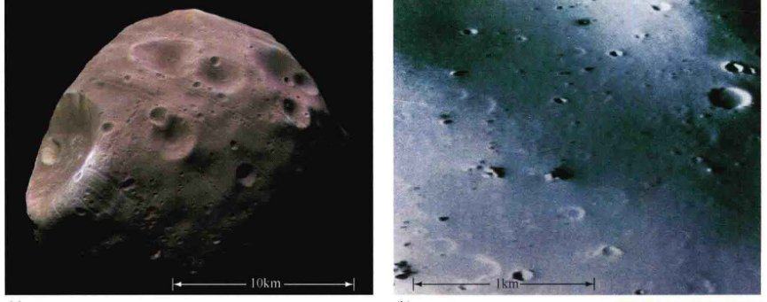
<div class="caption">
<strong>图10.25 火星的卫星</strong><br/>
        (a) 火星快车号拍摄的好似马铃薯状的火卫一照片，比曼哈顿岛大不了多少。左侧突出的撞击坑（称为斯蒂克尼）大小约几千米。(b) 类似火卫一，火卫二是更小的卫星，也与火星的组成不同。两颗卫星很可能是被捕获的小行星。火卫二的这张特写照片由海盗号轨道器拍摄。上面的大部分巨石的大小与房子差不多。[欧洲航天局 (ESA)]
    </div>
<p>火卫一和火卫二以圆形的赤道轨道环绕火星公转，并且是同步转动的（即，它们都永久保持同样的一面面对火星）。这些特点是火星潮汐影响的直接后果。两颗卫星都是正转的——也就是说，这两颗卫星以与行星自转和绕太阳公转都相同的方向（从火星的北极上方看的话是逆时针方向）绕行星旋转。</p>
<p>火卫一的轨道到火星的中心只有9378km（少于三个行星半径），正如我们前面看到的，其轨道周期为7小时39分钟。这一时间远远短于一个火星日，所以站在火星表面的观察者会看到火卫一“逆行”着移过整个火星的天空——就是说，与每天的视运动方向相反。由于火卫一的移动速度超过了行星的自转，因此它每天西升东落，从一边地平线穿越天空到另一边地平线大约需要5.5h。火卫二位于更远一些的地方，距火星中心23 459km，或略少于七个行星半径，公转周期为30小时18分钟。因为它完成一次公转的时间超过一个火星日，所以它是“正常”运动的（即东升西落），从地平线开始几乎要花3天才能穿越整个天空。</p>
<p>天文学家通过测量它们作用在现在正围绕火星运行的许多探测器的引力效果，来估计这两颗卫星的质量。（3.2节）火星卫星的密度大约是 $2000 kg/m^3$，远远小于我们目前介绍过的所有太阳系天体。这是天文学家认为火卫一和火卫二不可能是伴随着火星形成的原因之一。相反，天文学家多年来认为，它们更可能是在早期火星大气的外边缘被减速和捕获的过于接近火星的小行星。</p>
<p>火星全球勘测者号和火星快车号最近所做的测量表明，火卫一与成分和密度与其差不多的小行星是显著不同的，它比较多孔的内部结构可能令它太脆弱，不能在捕获过程中幸存下来。相反，它可能是这样形成的：一颗陨石撞击火星，喷出的物质被火星的引力捕获并保持在轨道上。这有点像我们的月球形成的碰撞假说，只是规模要小得多。（5.8节）</p>
<p>无论火卫一是如何到达那个位置的，在其低轨道上，它会持续与行星的上层大气摩擦。预计它的轨道会衰减，在短短的几千万年后便会跌落到行星的表面。</p>
<div class="concept-check">
<strong>概念理解检查</strong><br/>
        火卫一和火卫二在哪些方面不同于月球？
    </div>
<div class="ultimate-question">
<h3>终极问题</h3>
<p>一个多世纪以来，人们一直想知道，火星上是否有生命？经过多年的仔细观测，在那个有趣的世界还没有发现一个活物——智慧的或任何其他方式的，甚至连躲在尘土飞扬的岩石底下的虫子都没。如果确实存在火星人，它们一定是微生物——小、隐蔽，在一个总体上干燥、尘土飞扬、寒冷的世界里尽全力地勉强维持生存。也许，未来的自动探测器将发现考古证据表明生命现在已经灭绝，也许人们会发现根本就没有生物——不管是死的或是活的。无论是哪种情况，这一结论对我们在宇宙中的地位都可能是意义深远的。</p>
</div>
<hr/>
<h2>章节回顾</h2>
<aside class="sidebar">
<span class="sidebar-title">小结</span>
<ol>
<li>火星在地球轨道之外，从地球上看会走过整条黄道。火星的半径大约是地球的一半，质量是地球的1/10。它以与地球几乎相同的速度自转，其自转轴以与地球自转轴几乎相同的角度倾斜于黄道面。火星上的平均表面温度比地球上低约50K。另外，火星的天气也会让人联想到地球，有沙尘暴、云和雾。</li>
<li>作为自转轴倾斜的结果，火星很像我们的地球，有周日和季节性的周期，但因为火星的轨道偏心率，这些周期比地球上更复杂。从地球上看，火星表面最明显的特点是极冠，随着季节变化在火星上生长和收缩。两个火星极冠由<strong>季节性极冠</strong>(p.175)和<strong>残留极冠</strong>组成(p.175)，前者由二氧化碳组成，会生长和收缩；后者由水冰组成，保持永久冻结。火星的外观也会改变，因为季节性沙尘暴掩盖了它的表面。</li>
<li>火星表面有广袤的平原、巨大的火山、幽深的渠道和峡谷。火星表面的主要地貌是位于该行星赤道的塔尔西斯隆起。此地貌可能是由年轻的火星幔层物质上涌的“柱状熔岩流”造成的。“陪伴”该隆起的是奥林匹斯山——太阳系已知最大的火山，以及火星表面的一个巨大的裂缝——被称为水手谷。火星火山的高度是火星表面重力低的直接后果，没有证据显示发现火山近期的或正在进行的爆发。在火星的另一边是海拉斯盆地，该地点是早期火星被陨石猛烈撞击造成的。火星的两个半球有着明显的区别。北半球由起伏的火山平原组成，比充满环形山的南半球低好几千米。陨石坑在北部的缺乏表明，该地区是年轻的。火星南北不对称的原因尚不清楚。</li>
<li>强有力的证据证明，在火星表面曾经有流动的水。<strong>径流通道</strong>(p.171)是古老火星河流的遗迹，而<strong>流出通道</strong>(p.171)是山洪从南部高地到北部平原流出的路径。火星全球勘测者号及火星快车号拍摄的照片也强烈暗示了火星上曾经存在大量的液态水，漫游者号火星探测登陆器发现了火星过去湿润的直接证据。在其演化早期，火星可能享有一个相对短暂的、温暖的“类地球”阶段，那时有较厚的大气层，有雨水、河流、湖泊，甚至海洋。</li>
<li>今天，火星上的大部分水被锁定在极冠和火星表面下的冻土层里。海盗号对环绕环形山的液态喷出物的观测表明存在地下冰，火星奥德赛号和火星快车号随后检测到混有大量冰的沉积物位于火星的表面层下。火星探索者号已经在环形山壁上发现了无数的沟壑，它们似乎因流水形成，并在过去几年内发生了一些流动。仍不清楚这些流动是否意味着表面下方有液态水或冰。</li>
<li>类似金星的大气层，火星的大气主要由二氧化碳组成。然而，不像金星的大气层，较冷的火星大气的密度不到地球的1%。火星可能曾经有过浓密的大气，但它们逐渐丢失了，一部分去了太空，一部分进了表面的岩石、地下冻土(p.173)和极冠。即使在今天，火星稀薄的大气层仍然在慢慢地逃逸。</li>
<li>火星有及其微弱的磁场。考虑到该行星的快速旋转，这样微弱的磁场意味着火星的核心是非金属的或非流动的，或两者兼而有之。目前，火星缺乏火山活动，缺乏显著的磁场，有着相对较低的密度，其表面铁的含量较高，这些都表明，火星从未像地球那样广泛地熔融和分化。因为火星的迅速冷却和幔层的迅速固化，火星内部的对流似乎已经在20亿年前就被扼杀了。</li>
<li>火星的卫星火卫一和火卫二可能是由火星在其历史早期捕获的小行星，其密度远远低于任何在太阳系内部的行星。这些卫星可能是早期太阳系环境的代表。</li>
</ol>
</aside>
<section class="exercises">
<h2>复习与讨论</h2>
<ol>
<li>为什么冲日时是在地球上看火星的最佳时间？为什么在有的冲日时比其他冲日时欣赏火星效果更好？</li>
<li><strong>LO1</strong> 试想一下，你如果在火星的夏季访问它的南半球，描述你可能面临的大气环境。</li>
<li><strong>LO2</strong> 描述两个火星极冠的季节性和永久成分，以及它们之间的差异。</li>
<li>为什么火星是红色的？</li>
<li><strong>LO3</strong> 描述火星表面的主要大尺度特征。</li>
<li>为什么火星上的火山能长得这么大？</li>
<li>你为什么不能在火星上呼吸？</li>
<li><strong>LO4 POS</strong> 有什么证据证明水曾经在火星上流动？今天在火星上是否有液态水？</li>
<li><strong>LO5</strong> 今天在火星上是否有任何形式的水？</li>
<li><strong>POS</strong> 为什么有些科学家认为火星上曾经有大面积的海洋？它在什么位置？</li>
<li><strong>LO6</strong> 比较和对比火星、金星和地球的大气的演化。</li>
<li><strong>LO7</strong> 对火星磁场的测量告诉了我们关于这个行星内部的什么信息？</li>
<li><strong>POS</strong> 有什么证据表明火星从来没有像地球这样广泛地熔融？</li>
<li>由于火星上有大气，而且主要是由温室气体组成的，那为什么没有显著的温室效应加热其表面？</li>
<li><strong>LO8</strong> 如何对火星卫星的质量进行测量？这些测量结果告诉我们关于它们起源的什么信息？</li>
</ol>
<h2>概念自测：选择题</h2>
<ol>
<li>与地球的轨道相比，火星轨道：(a) 具有相同的偏心率；(b) 更大的偏心率；(c) 没那么偏心；(d) 更小。</li>
<li>从地球上看，火星呈现出大约多长时间的一次逆行？(a) 每周；(b) 每6个月；(c) 每2年；(d) 每10年。</li>
<li>与地球的直径相比，火星的直径：(a) 显著更大；(b) 显著更小；(c) 大小几乎相同；(d) 不清楚。</li>
<li>火星上季节的长度可以通过观测该行星的哪一项来确定？(a) 倾斜；(b) 偏心率；(c) 极冠；(d) 卫星。</li>
<li>火星上的死火山——奥林匹斯山的面积大约相当于下列哪项？(a) 珠穆朗玛峰；(b) 美国科罗拉多州；(c) 北美洲；(d) 月球。</li>
<li><strong>VIS</strong> 图10.4（“火星地图”）清楚地表明：(a) 在北半球有地表水和冰；(b) 一个巨大的峡谷绵延穿过整个行星；(c) 中纬度地区有铁矿床；(d) 在南方有多撞击坑的地形。</li>
<li><strong>VIS</strong> 液态水在古老的火星上存在的最好证据是图：(a) 10.11; (b) 10.13; (c) 10.14; (d) 10.16。</li>
<li>与金星的大气相比，火星大气有：(a) 显著更高的温度；(b) 显著更多的二氧化碳；(c) 显著更低的气压；(d) 显著更多的酸性化合物。</li>
<li>相较于金星大气，火星完全不同的大气特性可能是由于：(a) 无效的温室效应；(b) 反温室效应；(c) 没有能保持热量的温室气体排放出来；(d) 离太阳的距离更远。</li>
<li>火星的卫星：(a) 很可能是被捕获的小行星；(b) 因为火星与地球相撞而形成；(c) 是一个更大的卫星的残余；(d) 与火星同时形成。</li>
</ol>
</section>
</article>